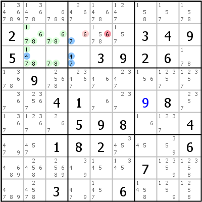

HoDoKu Lösungstechnik-Index: Beispiel für "Death Blossom"

Originales Sudoku:
.........2.....3495...3926..9.........41...8....598..4..182...6......7....3..6...
Verwenden Sie die folgende Zeile um das Sudoku in HoDoKu zu laden:
:9004:6:.........2.....3495...3926..9.........41..+98....598..4..182...6......7....3..6...:515 516:625:
Die folgende Darstellung kann per Zwischenablage in die meisten Sudoku-Programme eingefügt werden:
.------------------------.--------------------.--------------------. | 1346789 134678 6789 | 2467 14678 1247 | 158 157 1578 | | 2 1678 678 | 67 15678 157 | 3 4 9 | | 5 1478 78 | 47 3 9 | 2 6 178 | :------------------------+--------------------+--------------------: | 13678 9 25678 | 23467 467 2347 | 156 12357 12357 | | 367 23567 4 | 1 67 237 | 9 8 2357 | | 1367 12367 267 | 5 9 8 | 16 1237 4 | :------------------------+--------------------+--------------------: | 479 457 1 | 8 2 3457 | 45 359 6 | | 4689 24568 25689 | 349 145 1345 | 7 12359 12358 | | 4789 24578 3 | 479 1457 6 | 1458 1259 1258 | '------------------------'--------------------'--------------------'
Darstellung des Lösungsschrittes:
.--------------------------.----------------------.--------------------.
| 1346789 134678 6789 | 2467 14678 1247 | 158 157 1578 |
| 2 A1678 A678 | B67 15-678 157 | 3 4 9 |
| 5 A1478 A78 | *47 3 9 | 2 6 178 |
:--------------------------+----------------------+--------------------:
| 13678 9 25678 | 23467 467 2347 | 156 12357 12357 |
| 367 23567 4 | 1 67 237 | 9 8 2357 |
| 1367 12367 267 | 5 9 8 | 16 1237 4 |
:--------------------------+----------------------+--------------------:
| 479 457 1 | 8 2 3457 | 45 359 6 |
| 4689 24568 25689 | 349 145 1345 | 7 12359 12358 |
| 4789 24578 3 | 479 1457 6 | 1458 1259 1258 |
'--------------------------'----------------------'--------------------'
Death Blossom: [r3c4], -4- r2c23,r3c23 {14678}, -7- r2c4 {67} => r2c5<>6
Copyright © 2008-12 von Bernhard Hobiger
Zuletzt geändert am 5. Mai 2025 von shorty#3746
(basierend auf dem 1to9only Github-Repo)
Alles Material auf dieser Site unterliegt der GNU FDLv1.3.